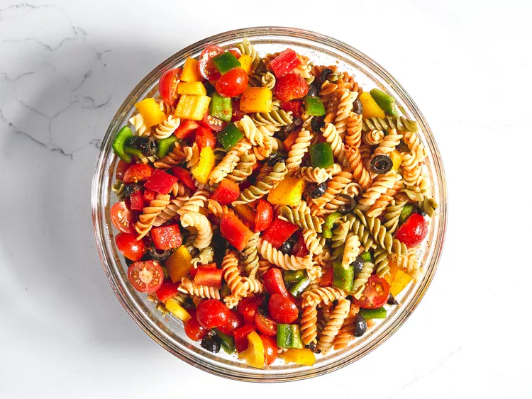

Pasta Salad

Description
This easy pasta salad recipe comes together quickly with convenient
ingredients and colorful vegetables.
Since the flavors need time to meld in the refrigerator, it might actually be
better to make it a day or two in advance.
Ingredients
- 1 pound tri-colored spiral pasta
- 1 (16 ounce) bottle Italian-style salad dressing
- 6 tablespoons salad seasoning mix
- 2 cups cherry tomatoes, diced
- 1 green bell pepper, chopped
- 1 red bell pepper, diced
- ½ yellow bell pepper, chopped
- 1 (2.25 ounce) can black olives, chopped
Steps
-
Bring a large pot of lightly salted water to a boil. Cook pasta in the
boiling water, stirring occasionally, until tender yet firm to the bite,
about 10 to 12 minutes; rinse under cold water and drain.
-
Whisk Italian dressing and salad spice mix together until smooth. Combine
pasta, tomatoes, bell peppers, and olives in a salad bowl.
- Mix the dressing with the salad.
- Refrigerate salad, 8 hours to overnight.
Guten Appetit!